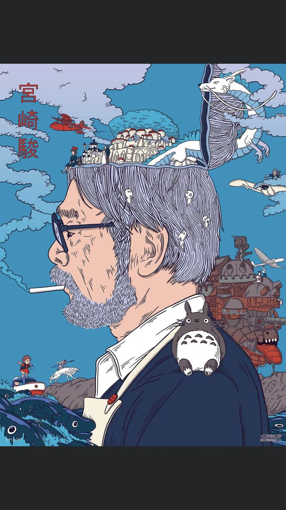

About Miyazaki
宮崎 駿, Miyazaki Hayao, is a Japanese animator, director, producer, screenwriter, author, and manga artist. A co-founder of Studio Ghibli, he has attained international acclaim as a masterful storyteller and creator of Japanese animated feature films, and is widely regarded as one of the most accomplished filmmakers in the history of animation.
I do believe in the power of story. I believe that stories have an important role to play in the formation of human beings, that they can stimulate, amaze and inspire their listeners.